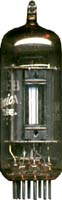

|
Owner, METASONIX, Redwood City, California USA e-mail: synth@metasonix.com Using Special Beam-Deflection Tubes Now we are entering a world which has no parallel in the transistorized age. Between the mid 1930s until integrated circuits became commonplace in the 1960s, special electron tubes were designed to take advantage of specific effects of electron-beam ballistics. Essentially, these tubes were "integrated circuits" before the term even existed. And they did fairly complex things using very simple designs.  In 1954, the expanding need for single-sideband communications equipment caused RCA to introduce a special tube for use as a balanced modulator. The 7360, the first of the "sheet-beam" tubes, is often seen in Collins and other two-way radio equipment of the period. Because there are obsessive Collins collectors, 7360s have become scarce and costly. However, the tube manufacturers were always looking for new markets that could be satisfied with tubes made on their existing production equipment, especially the huge television business. So lower-cost versions (with a different pinout, to prevent cross referencing) of the 7360 were made, primarily under the numbers 6AR8 (believed to be a Tung-Sol product), 6JH8 (Sylvania) and 6ME8 (apparently GE). These tubes were almost identical to each other, even though they were made by different factories--typical of the tube business--standardization was forced upon them by TV set manufacturers, who wanted to use these beam tubes as video demodulators. Another family of sheet-beam tubes was the 6HW8, believed to be European in origin and quite different in pinout from the others. And there's the obscure 7763, having yet another pinout. The sheet-beam tubes were modified pentodes. Between the suppressor grid and a pair of matching anodes, there were placed two beam-deflection plates. By putting a push-pull modulation AC signal across these two deflection plates, the electron beam could be "forced" to switch from one anode to the other; giving a very good ring modulator effect, with reasonable carrier suppression (provided the input and modulation signals were fairly high in peak voltage). So far, this sounds similar to the differential-amp balanced modulator seen in IC form. However, the tube has something the IC doesn't.......... a screen grid. By varying the screen voltage between the plate supply voltage and the actual plate idle voltage, drift effects take over, and the peaks of the waveform start to fold over on themselves. Moreover, this folding is not sharp, as in the famed Serge "waveshaper" circuit of the 1970s. It also happens on top of the modulation, causing some very strange and distinctive effects. See the diagram for the general hookup for the 6AR8 family.
Before the sheet-beam tube, Zenith radio engineers were working on frequency modulation. They wanted to make receivers lower in cost, so they developed a special tube to use as an FM detector. The 6BN6 family is quite different in behavior from any other "conventional" tube. It uses electron drift to clip the waveform in a very soft fashion---such characteristic is much more rounded-off than even a low-mu triode, a remote-cutoff device, or a semiconductor clipper. The "quadrature electrode" (pin 6) can be connected to a tuned circuit, which would then be adjusted to 90 degree phase shift, obtaining FM demodulation without a product detector (and a costly close-balanced transformer). The clipping effect was handy to keep the FM carrier constant in level, allowing the receiver some rejection of AM and interference. The 6BN6 was never used as an audio processor--until now. The circuit shown allows adjusting the grid voltages, so the "soft clipping" effect can be varied from the bottom to the top of the waveform. This circuit requires a fairly "hot" signal, as it is not really an amplifier in the usual sense. I recommend at least 10v p-p. Also, the schematic shows how to use 3BN6 and 4BN6 tubes as well as 6BN6s and 6KS6s, without changing the heater supply voltage. The 18-ohm resistor allows just the right voltage drop and current limit for all the tubes, with no other circuit changes. This can be handy, as 3BN6s and 4BN6s abound at surplus dealers; like the sheet-beam tubes above, absolutely nobody wants them, as you can't build hi-fi preamps with BN6s, nor is there any collector's market for the cheap FM table radios or cheap TV sets they were used in. Although out of production, these odd tubes are cheap and available in vast quantities.
Finally, don't get the idea that these are the only strange tubes. I have yet to cover secondary-emission amplifiers, such as the 1630, EE50, EFP60 and 7548. Although there were plenty of remote-cutoff tubes made for radio AGC use, no one seems to remember the highly bizarre 6AE6G, a triode with both remote-cutoff and sharp-cutoff characteristics simultaneously. Digital counting tubes were made, in various families--Dekatrons, Trochotrons, Beam-X, and the Philips E1T. Plus pentagrid converters, Heptodes, Octodes, Nonodes, dual-control pentodes, special tubes for analog computers (QK329) and many cold-cathode gas tubes. Plus a whole slew of strange devices which are not listed in any tube manual. So, this is only the beginning.
One of Ken Stone's 4BN6 beam modulator modules. This also includes two VCAs.
The other of Ken Stone's 4BN6 beam modulator modules.
About the Author Eric Barbour holds a BSEE degree from Northern Arizona University. He has been a regular contributor with GLASS AUDIO magazine since 1991, staff editor of VACUUM TUBE VALLEY magazine since its founding in 1995, and has written articles for many other music and audiophile publications.
A note to readers: this circuitry is intended for the more advanced builder. Because high voltages are used, a shock hazard exists. We do NOT recommend that the novice DIY musician try to construct this synthesizer. Some experience with tube electronics is highly recommended. Also note: readers are permitted to construct these circuits FOR THEIR OWN PERSONAL USE ONLY. Eric Barbour retains all rights to them. Any attempt to patent, copyright, trademark, or manufacture them for sale, without the express written permission of Eric Barbour, will result in legal action. Audio Synthesis via Vacuum Tubes Home
|